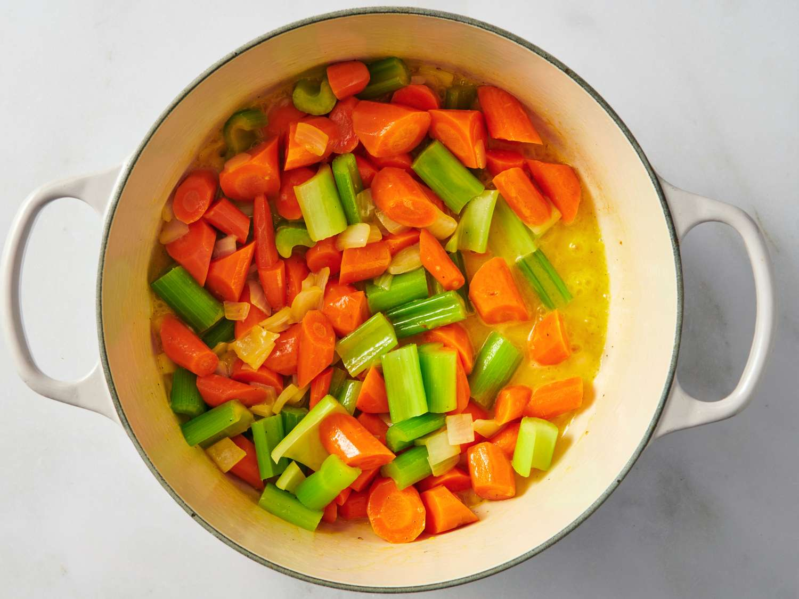
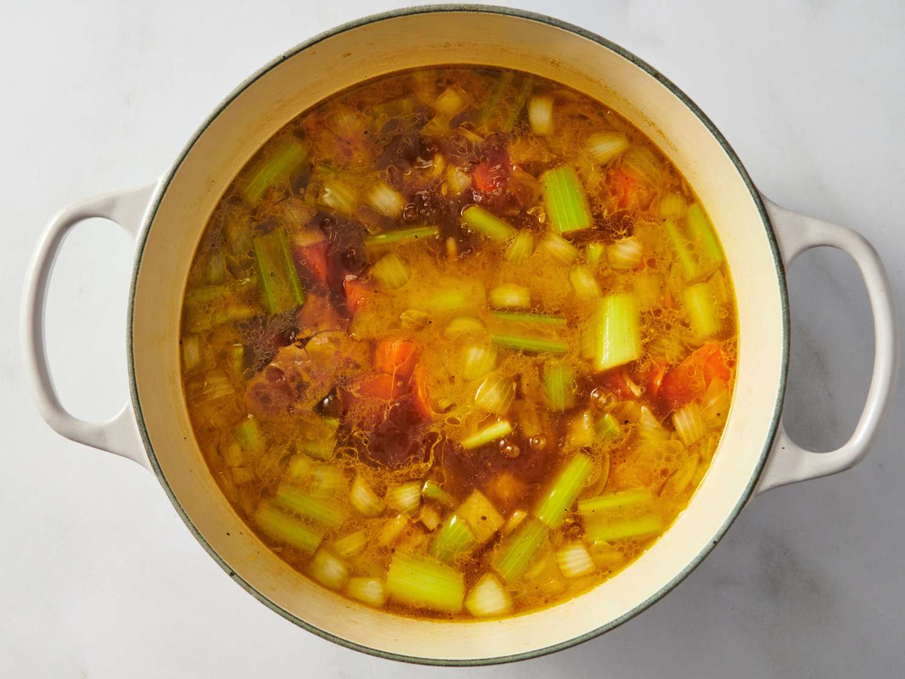
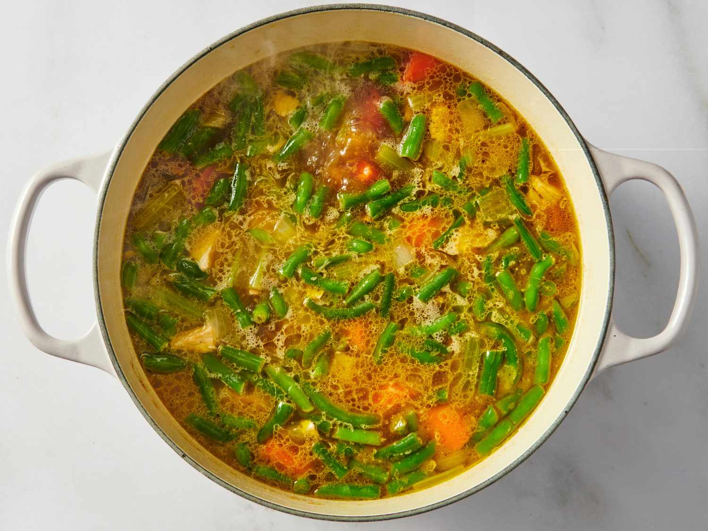
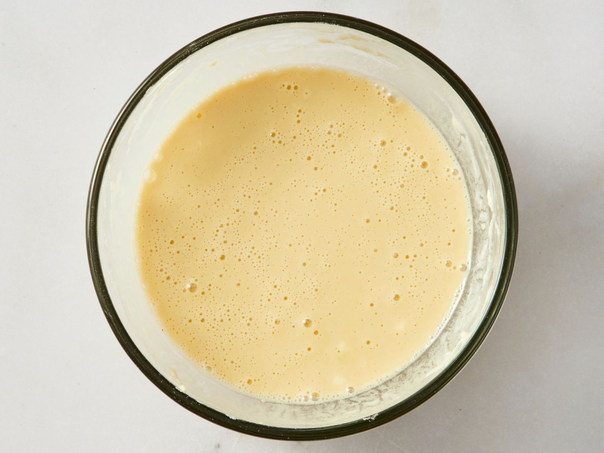
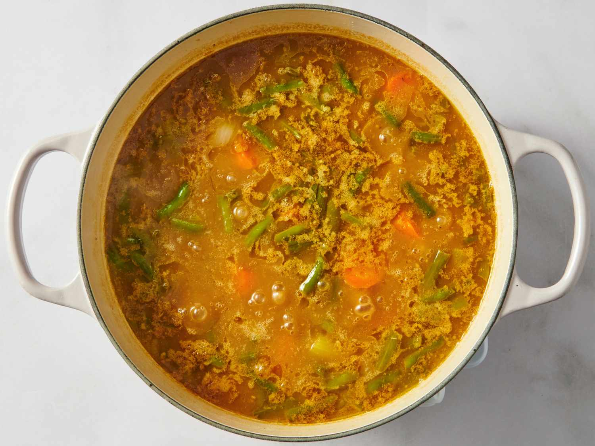
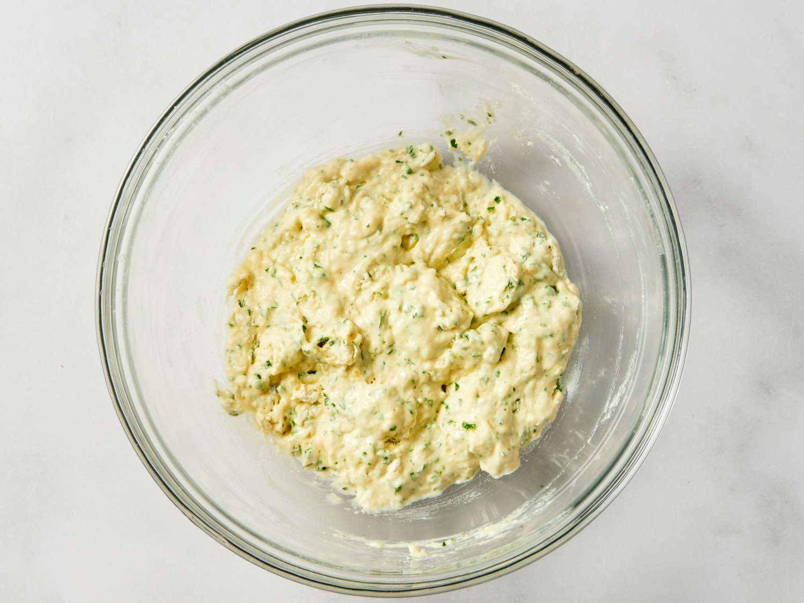
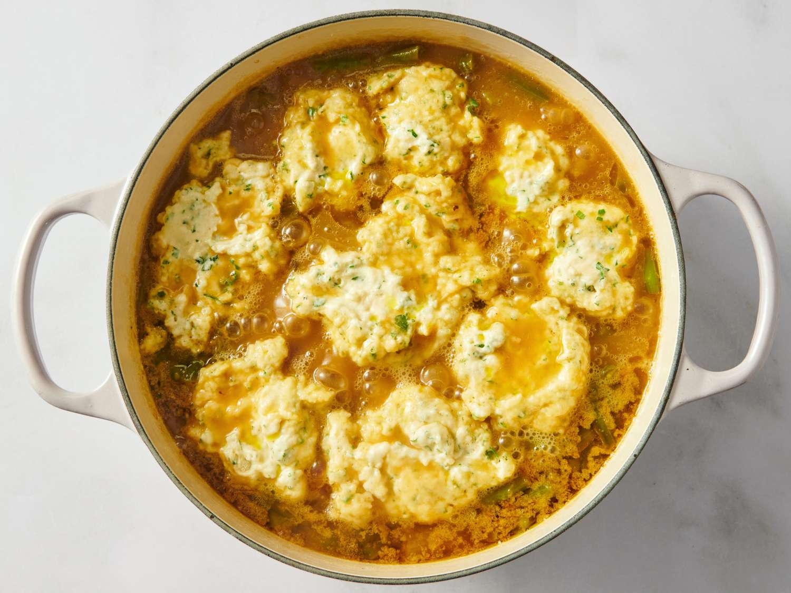
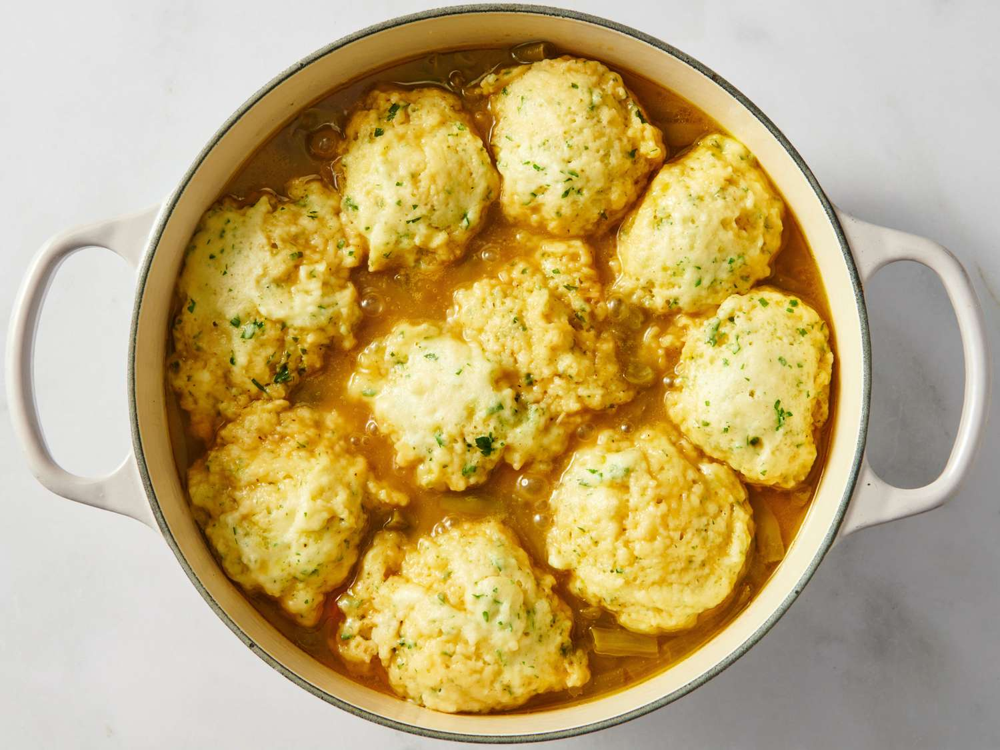

Turkey with Dumplings Soup

Put your leftovers to good use with this turkey dumpling soup. Full of hearty ingredients and rich flavor, it’s the perfect day-after-Thanksgiving meal.
15 mins
45 mins
1 hr
10
Ingredients
- ½ cup butter, cubed
- 8 medium carrots, cut into chunks
- 4 stalks celery, cut into chunks
- 1 cup chopped onion
- 2 cans condensed beef consommé
- 2 teaspoons salt
- ¼ teaspoon black pepper
- 3 cups cooked turkey
- 2 cups green beans
- ½ cup flour
- 2 teaspoons Worcestershire sauce
Dumplings
- 1½ cups flour
- 2 tbsp parsley
- 2 tsp baking powder
- 1 tsp salt
- ⅛ tsp seasoning
- ¾ cup milk
- 1 egg
Directions
Step 1
Melt butter in a Dutch oven over medium-high heat. Add carrots, celery, and onion and sauté until soft, 5 to 10 minutes.

Step 2
Add 4 cups water, condensed consommé, salt, and pepper; bring to a boil. Reduce heat to low, cover, and cook until vegetables are tender, 10 to 15 minutes.

Step 3
Add turkey and green beans to the Dutch oven; cook for 5 minutes.

Step 4
Combine flour, remaining 2/3 cup water, and Worcestershire sauce in a small bowl and stir until smooth.

Step 5
Stir into soup, increase heat, and bring to a boil. Reduce heat, cover, and simmer soup until thickened, about 5 minutes.

Step 6
While soup is simmering, make dumplings: Mix flour, parsley, baking powder, salt, and poultry seasoning together in a large bowl. Whisk milk and egg together in a separate bowl. Stir egg mixture into flour mixture, mixing just until batter is moistened.

Step 7
Drop tablespoons of dumpling batter into simmering soup.

Step 8
Cover and simmer until a toothpick inserted into several dumplings comes out clean, 15 to 20 minutes.

Nutrition Facts (per serving)
303
Calories
13g
Fat
29g
Carbs
18g
Protein